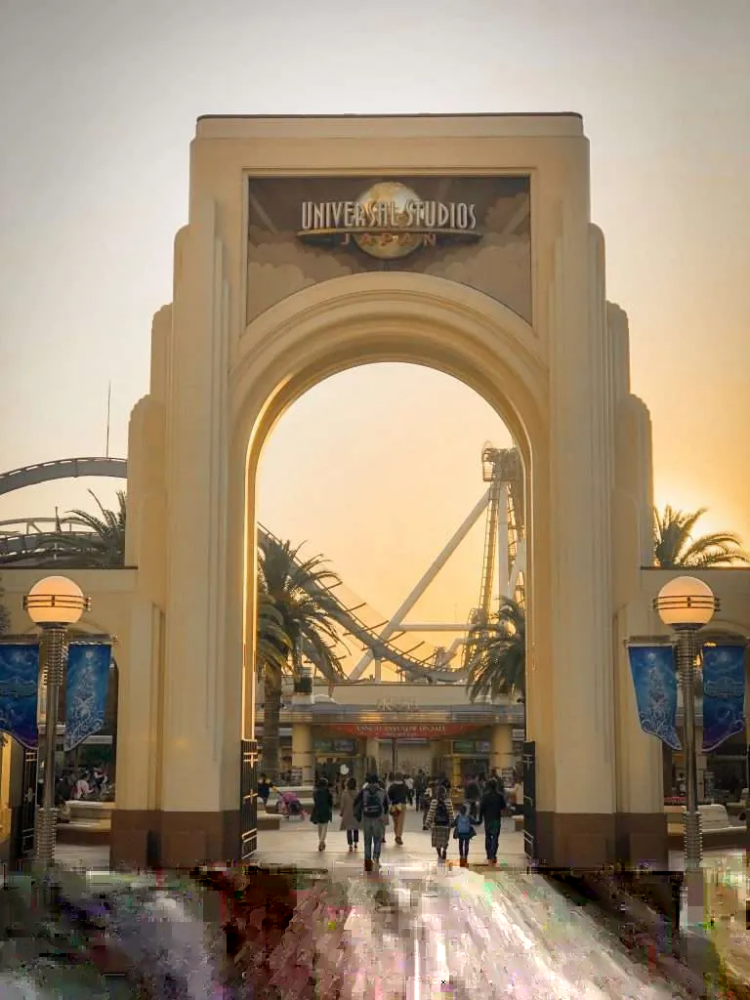
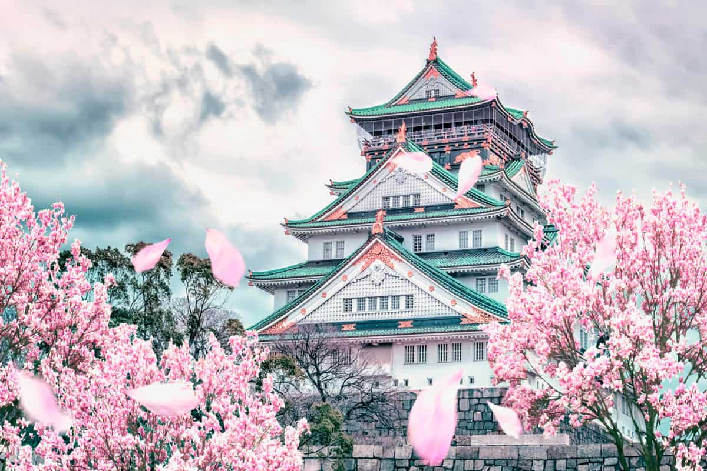

03 OSAKA
The "food capital". Same as Tokyo, Osaka has skyscrapers, but unlike Tokyo, it has a tottally different vibe.
Universal Studios Japan
Although there is a Disneyland in Japan, you still must visit this one! You know the Unuversal Studios, right? When You enter there, it feels like you went to an unreal world. As for me, the most interesting place is the Nintendo section. It's a theme park where you will find Mario, levels from Mario, and many other different things. By clicking this link, you can behold the other parts of this magical park!
Osaka Castle
A big Asian-styled castle which stands on a hill. The castle has stony fences and many gates. Looks cool!
Some Food From Osaka
Osaka is famous by its food, especially street food. Their food may taste a little weird, but the experience is great.
You deffinately should try these:
- Tayaki - pastry in shape fish filled with sweet beans
- Takoyaki - savory balls with octopus
- Crepes with cream - they are crepes with cream!
- Chicken sticks
- Daifuku Mochi - sticky dough with fruit filling inside
- Onigiri - rice "pie"